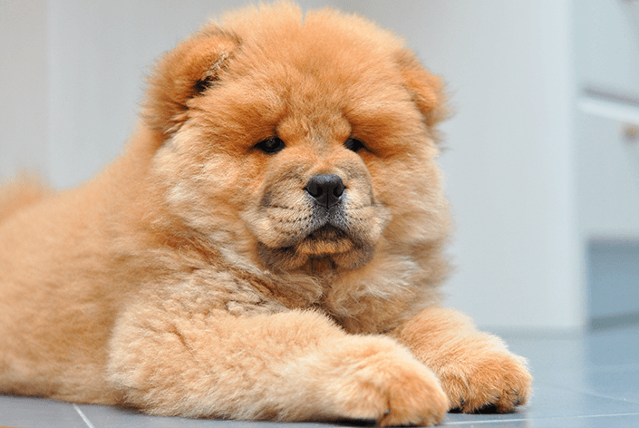

Mundo dos animais |
||
FotosCachorroCoelho Gato |
 🐾 Chow Chow 🐾O Cow Chow é uma das raças de cachorro mais antigas do mundo, existindo há mais de 2 mil anos, com origem na China. 🐕🦴 Ele já foi usado como: - Cão de guarda - Cão de caça - Proteger templos e palácios na China antiga |
SitesChow ChowCoelhinhos Gatos |
| Cachorro: entende emoções | Coelho: pula alto | Gato: dorme muito | ||